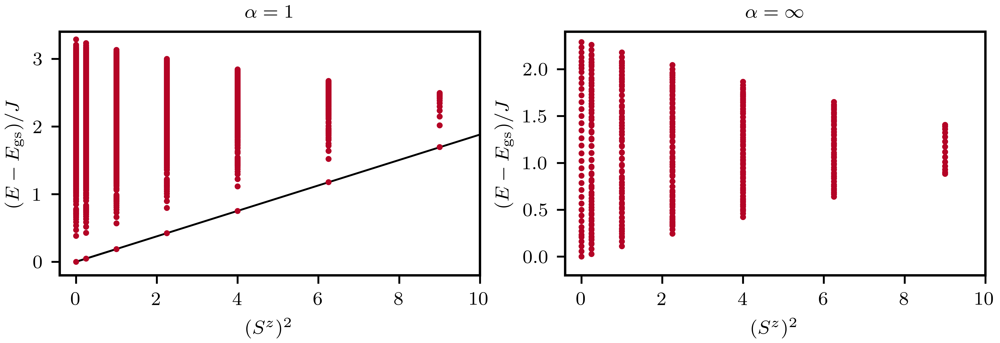

Tower Of States \(\alpha \text{XX}\) model
Author Rafael Soares
We perform a tower of states (TOS) analizes [1] of the \(\alpha \text{XX}\) model [2]. This model consists of an array of \(N\) spin-\(\frac{1}{2}\) sites with long-range \(\text{XY}\) couplings that decay as a power law with exponent \(\alpha\), $$ \mathcal{H} = -\dfrac{J}{2} \sum_{i<j} \dfrac{S^+_iS^-_j+S^-_iS^+_j}{|i - j|^\alpha}. $$
The TOS analysis provides strong evidence for spontaneous symmetry breaking (SSB) in the thermodynamic limit, as the ground state of a finite system is completely symmetric. The spectrum of the \(\alpha \text{XX}\) model can be labeled by total magnetization since \(\left[\mathcal{H}, S^z \right]=0\).
To perform the TOS analysis, we gather the eigenvalues using either full exact diagonalization (ED) or the Lanczos algorithm in each symmetry sector.

In the figure above for \(\alpha=1\), the lowest energy in each \(S^z\) sector clear forms a tower of states. These energies scale as \(\propto 1 / N\), so in the thermodynamic limit there the collapse of the tower of states forming a highly degenerate ground state manifold [3]. As such, in the thermodynamic limit SSB occurs. In contrast, for a finite system the ground state always lies in \(S^z=0\), and so it is symemtric (it is also an eigenstate of the Hamiltonian's symmetry).
SSB does not occur for all values of \(\alpha\). For example, when \(\alpha \rightarrow +\infty\), the system becomes a one-dimensional \(\text{XX}\) spin chain with only short-range interactions. In this case, the ground state is always in the \(S^z=0\) sector.
#include <xdiag/all.hpp>
using namespace xdiag;
int main() {
int Nsites = 14; // total number of sites
double alpha = 1.0; // Exponent power-law decay
auto ops = OpSum(); // create OpSum
for (int i = 0; i < Nsites; i++) {
for (int j = i + 1; j < Nsites; j++) {
double J = -1.0 / (sqrt(Nsites) * pow(abs((double)(i - j)), alpha));
ops += J * Op("Exchange", {i, j});
}
}
// Diagonalize in each magnetization sector using FullED
int total_eigen = pow(2, Nsites);
arma::mat energies = arma::mat(
total_eigen, 2,
arma::fill::zeros); // Collect the energies with the number of spins up.
arma::vec eig;
int count = 0;
for (int nup = 0; nup <= Nsites; nup++) {
auto block = Spinhalf(Nsites, nup);
arma::mat H = matrix(ops, block);
eig_sym(eig, H);
for (int j = 0; j < eig.n_elem; j++) {
energies(count, 0) = nup; // Magnetization sector
energies(count, 1) = eig(j); // Energy eigenvalue
count++;
}
}
// Construct the filename
std::string flstring = "energies_tos_XXmodel.Nsites." +
std::to_string(Nsites) + ".alpha" +
std::to_string((double)alpha) + ".outfile.h5";
auto save_fl = FileH5(flstring, "w!");
save_fl["energies"] = energies;
return 0;
}
using XDiag
using LinearAlgebra
using Printf
using HDF5
function main()
Nsites = 24 ## Number of Sites
alpha = 1.0 ## Exponent power-law decay
ops = OpSum() ## create OpSum
for i in 1:Nsites
for j in (i+1):Nsites
J = -1.0 / (sqrt(Nsites) * (abs(i - j))^(alpha))
ops += J * Op("Exchange", [i, j])
end
end
energies = Vector{Float64}[] ## Collect the energies
Diagonalize in each magnetization sector using FullED
for nup in 0:Nsites
block = Spinhalf(Nsites, nup)
H = matrix(ops, block)
eig = eigvals(Hermitian(H))
for e0 in eig
push!(energies, [nup, e0])
end
end
#Diagonalize in each magnetization sector using Lanczos to get the first few eigenvalues
# for nup in 0:Nsites
# block = Spinhalf(Nsites, nup)
# r = eigvals_lanczos(ops, block, neigvals = 1);
# for e0 in r.eigenvalues
# push!(energies, [nup, e0])
# end
# end
filename = @sprintf("energies_tos_XXmodel.Nsites.%d.alpha.%d.outfile.h5", Nsites, alpha)
h5open(filename, "w") do file
write(file, "energies", hcat(energies...))
end
end
main()
references
[1] P. W. Anderson, An Approximate Quantum Theory of the Antiferromagnetic Ground State, Phys. Rev. 86, 694 (1952)
[2] Tommaso Comparin, Fabio Mezzacapo and Tommaso Roscilde, Robust spin squeezing from the tower of states of U(1)-symmetric spin Hamiltonians, Phys. Rev. A 105, 02262 (2022)
[3] Alexander Wietek, Michael Schuler and Andreas M. Läuchli, Studying Continuous Symmetry Breaking using Energy Level Spectroscopy, arXiv:1704.08622 (2017).